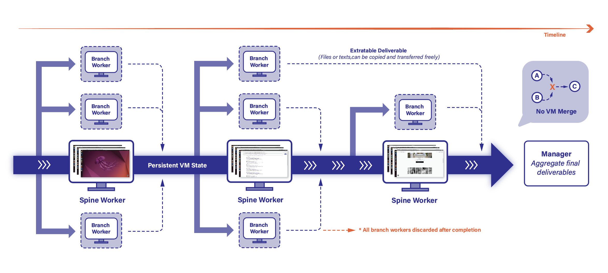
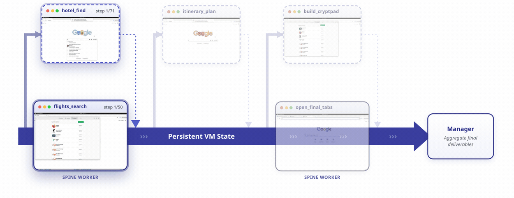
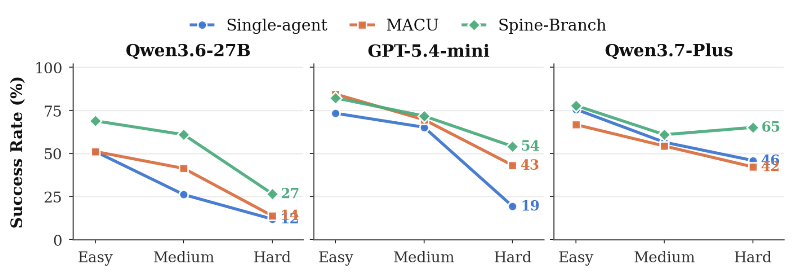

Spine-Branch Coordination for Multi-agent Computer Use
You can merge two files but you cannot merge two live machines.
Computer use agents (CUAs) are increasingly deployed as multi-agent systems that decompose a task into multiple subtasks executed across parallel virtual machines (VMs). However, a critical physical bottleneck is that the state of two VMs cannot be merged. Previous systems handle this ad-hoc rather than treating it as a first-class concern. We propose Spine-Branch Coordination for multi-agent computer use, a framework that decomposes a task into a Spine-Branch graph, where the spine carries the main task flow with continuous VM state and branch tasks execute in parallel to collect information the spine needs to complete the task. Branch VMs are discarded once their tasks finish, so no VM merging ever occurs. Experiments show that on 200 long-horizon tasks from Odysseys and across three CUA backbones, Spine-Branch improves success rate over the baseline system by 6.0% to 16.5%, while reducing per-task cost by 34% to 70%, indicating that explicitly modeling VM-state merging constraint enables multi-agent computer use to scale efficiently.
Multi-agent systems split a task across many virtual machines (VMs), then combine the results. That works when the result is a file you can copy and combine freely, but not when it is a live machine.
Copy ✓ Extractable results
A downloaded file, an exported dataset, a text answer. Once it is out of the VM it stands on its own: copy it, send it to many VMs, stitch several together. It is just data.
Merge × Live VM state
CPU registers mid-instruction, the contents of RAM, running processes and their open file handles, a logged-in session with its cookies. Ask yourself how you would fuse two machines' CPU and memory into one: there is no such operation. To hand this state over is to hand over the whole VM.
The rule: single-parent VM inheritance
A VM can start only two ways: booted fresh, or cloned from one existing VM (an operation offered by every virtualization stack, such as VMware, KVM/QEMU, Hyper-V, Xen). No stack has an operation that fuses two running machines into one. So a subtask can inherit a live environment from at most one parent, never two. This is our core motivation: a coordination framework should be built to respect this constraint from the start, instead of hitting it mid-run and scrambling to rebuild lost state.
State that cannot be cheaply rebuilt stays on one continuous flow (the spine); everything reducible to a transferable artifact runs in parallel (the branches).

Spine Persistent VM state
A chain workers linked by VM cloning; each node has exactly one state-parent.
- Spine head boots fresh; each next node clones its predecessor's final VM.
- Preserves live state costly to rebuild: sessions, open apps, in-progress workflows.
- The final VM of spine is retained for final delivery.
Branch Parallel gather, then discard
Every other worker. Runs on a fresh VM or a clone of one spine VM, in parallel with the spine and other branches.
- Handles acquisition, analysis, transformation, validation, artifact construction.
- Commits at least one extractable artifact on completion.
- Its disposable VM is discarded the moment it finishes, so no VM ever merges.
Animations driven by real Spine-Branch runs. The timeline sweeps the persistent-VM-state spine; branch workers spawn in parallel, return an artifact to the spine, then their VMs are discarded. Everything ends at the Manager.
The task
Can you help me plan a Christmas trip to San Francisco from Pittsburgh and do it in the browser so I can actually look at the options with you? Start on Google Flights and search round-trip flights from PIT to SFO leaving December 23 and coming back December 26, favoring a nonstop that gets me into San Francisco in the afternoon. Then use Google Hotels to find a place in North Beach, Nob Hill, or Union Square with at least a 4.5-star rating and under $400 per night, and open the actual hotel page. Switch to Google Maps and build a 3-day plan (Dec 23 to 25) covering the Golden Gate Bridge, Alcatraz, the Ferry Building, one Michelin restaurant, a well-known bakery, and a scenic viewpoint, grouped so travel legs stay short. Put everything into a CryptPad Document with the chosen flight, the hotel, and a day-by-day itinerary, and leave the flight, hotel, and key map tabs open as proof.


OSWorld 2.0 grades desktop tasks programmatically from a single VM's final state, so decomposition mostly adds execution overhead. But on the tasks whose plan holds two or more independent, non-trivial gathering branches, Spine-Branch wins.
On the 19 OSWorld 2.0 tasks worth decomposing (plans with two or more independent, non-trivial gathering branches), Spine-Branch beats single-agent on reward (0.17 vs. 0.12) and lands the only full success (1/19 vs. 0/19). Decomposition pays off precisely when a task genuinely splits into parallel work.